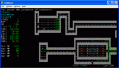

- Welcome to Touhou Wiki!
- Please register to edit. For assistance, check in with our Discord server or IRC channel.
Touhou Angband
| Touhou Angband | |
|---|---|
|
 | |
| Developer |
Shrinemaiden BBS |
| Publisher |
The Internet |
| Released |
2006 |
| Genre |
Roguelike Game |
| Gameplay |
Single-Player Dungeon Crawler |
| Platforms |
Any system that will run Angband |
| Requirements |
Computer, monitor, keyboard, sanity optional |
Touhou Angband is a modification of the characters, monsters, and items for Angband 3.0.9, a famous roguelike game, to feature the Touhou Project characters.
Synopsis[edit]
Back in the day, before there was Fushigi Dungeon, before there was Diablo, before there was Progress Quest... there was Angband.
Touhou Angband v0.03[edit]
Two days of horrible horrible jetlag have led to the completion of Touhou Angband v0.03. In anticipation of your eager questions, I have prepared the following:
TOUHOU ANGBAND FAQ[edit]
- What is Angband?
- Angband is a computer game that has aged very, very poorly.
- What is Touhou Angband?
- Touhou Angband is crap. If you expect more than crap, you will be sorely disappointed. Touhou Angband is not to be taken seriously.
- What is Touhou Angband, really?
- Imagine the biggest brain-fart in the history of mankind. Now imagine Touhou Angband. Was there a difference? ...Didn't think so.
- What?
- Touhou Angband v0.03 is a modification of Angband v3.0.9 by Robert Ruehlmann and countless others. Touhou Angband is only a modification of the items, monsters, races, and classes. There are no changes (at current) to the Angband codebase.
- How is it different from Angband?
- Races, items, and artifacts have been vastly changed. Otherwise it's mostly the same old Angband.
- Lame.
- That would be correct.
- What's new in v0.03?
- Upgraded to Angband 3.0.9 (mostly a bugfix release.) Extensive monster renaming: most yeeks/novices -> fairies, orcs/dark elves -> youkai, ogres -> oni. Several orc uniques recreated as Touhou characters. Artifact depth & rarity increased across the board, hopefully making the game more interesting at higher levels. Fairy race nerfed. Rinnosuke nerfed (but given better drops). Etcetera. One thing I forgot to do is remove Cirno's trap creation spell -_-
- What's new in v0.027?
- Artifacts.txt is now complete. Some ego-items have been changed. There is now only one remaining named Tolkien-esque artifact, though there are nevertheless a few artifacts that aren't from Touhou. Items have been changed (somewhat). Weapons, save for most of the polearms, have been changed and the rich literary history of Angband has been thoroughly defiled and pissed upon. Townspeople have been modified. Some tweaks to items, one new item (fairy wings--bat/feather wings are now heavier than before). Still no significant changes to the monstarrrs. Morgoth is gone, though...
- Will there be any further changes?
- Not from me, no. All of the data files are available on the Wiki for community editing. If you'd like to make changes, you are more than welcome to edit files on the wiki. Please test out your changes before modifying the files on the wiki. Note: If you want to add items, races, etc., you will need to modify limits.txt appropriately.
- What are Touhou characters doing in a 100-basement dungeon?
- How does a shrinemaiden fly with her armpits exposed?
- I saw [character] in the dungeon. I thought she was a shopkeeper. Then I killed her, but she's still in the shop. What's going on?
- Sometimes Touhou characters like to leave their shops and walk around and pretend to beat each other up. For example, Mystia Lorelei is a self-sustaining source of chicken in Imperishable Night and yet she is alive and well in PoFV. Also, magic.
- Why isn't Rinnosuke a unique character?
- Rinnosuke is the only living male in Gensokyo. Many Rinnosukes are needed to ensure the stability of Gensokyo's population.
- How do I look at item descriptions without reading a scroll of Kourindou (*Identify*)?
- Hit "I" (case sensitive, so that's Shift+I) to examine one of your items.
- What do fairies do when they're not serving as cannon fodder?
- Most of their time is spent flying, but sometimes they shoot danmaku. (Ask Marisa if you don't believe me.)
Many thanks to the people who contribute to Touhou Wiki, because quite frankly Touhou Angband wouldn't exist without the wiki.
Installing[edit]
Binaries used to be available here. This is the easiest way to install Touhou Angband.
If you already have a copy of Angband and wish to modify it(or if you don't run Windows), see below for data files that should be compatible with all versions of Angband 3.0.9. You might also want to grab a slightly modified news.txt, which goes in Angband's /lib/file directory.
Editing files[edit]
To use these files, place them in Angband's "edit" directory. You may need to delete the contents of the "raw" directory. Run Angband.
- artifact.txt - Artifacts. Completed.
- monster.txt - Monster data. Only changes the townspeople and a few monsters.
- object.txt - Ordinary objects.
- ego_item.txt - Ego items, ordinary objects with special powers. Some names changed.
- p_class.txt - Character classes. Names changed slightly. One or two classes are wholly overpowered. Well, one really.
- p_race.txt - Character races. Complete, with an added race.
- p_hist.txt - Character history. Complete. If you edit this, make sure to follow the N:#:#:#:# lines AND edit the limits.txt file appropriately.
- shop_own.txt - Shop owners. Complete.
- limits.txt - Stack limits. Complete. Need this file to use the new items/artifacts.
- cost_adj.txt - Cost adjustments. Need this file to use the extra race.
- Unmodified files: flavor.txt, terrain.txt, vault.txt.
File Mirror / Spoiler Files[edit]
Version 0.027 and a copy of both the edit and spoiler files for v0.027 are available for your perusal here. However, from this point forward the wiki should remain the most up-to-date source for files.